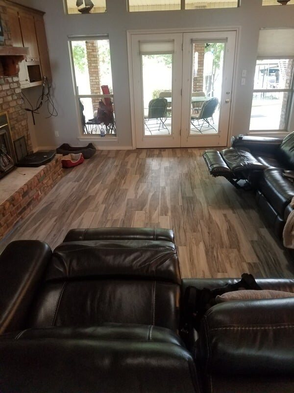
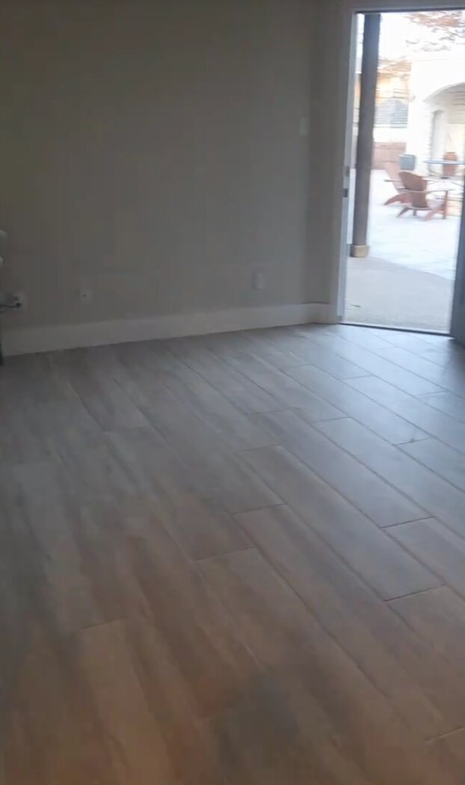

Dallas-Fort Worth Flooring Contractor
Flooring Installation & Subfloor Repair in DFW
LVP, engineered hardwood, laminate, tile and flooring repairs for homes, rental properties and commercial spaces.
Complete Flooring Service
Flooring Starts With Proper Preparation
A durable floor depends on what is underneath it. Before installation, we review the existing floor, transitions, moisture concerns, damaged areas and whether the subfloor needs repair or leveling.
Luna General Contractors can coordinate removal of existing material, subfloor repair, surface preparation and installation so the finished floor has a cleaner appearance and better long-term performance.
Request Your EstimatePlanning the Installation
Choosing Flooring for the Way the Property Is Used
Different rooms place different demands on flooring. High-traffic areas may benefit from durable LVP or tile, while engineered wood can provide a warmer appearance in living spaces. The right choice also depends on moisture exposure, existing slab or subfloor conditions, transitions to adjacent rooms and the height available at doors and trim.
For remodels and insurance-related build-back work, we also coordinate flooring with baseboards, cabinets, paint and other finish trades so the work happens in the correct order.
Before & After
Flooring Project Photos
Real flooring replacement and installation work by Luna General Contractors.



Service Areas
Flooring Installation Across DFW
We provide flooring installation and repair in communities throughout the Metroplex, including Dallas, Fort Worth, Arlington, Mansfield, Midlothian, Waxahachie and Weatherford. See our service areas for more locations.
Flooring FAQ
Questions About Flooring Installation
What flooring materials do you install?
We install luxury vinyl plank, engineered hardwood, laminate, tile and other common materials depending on the project.
Do you repair subfloors before installing new flooring?
Yes. Damaged or uneven subfloor areas can be addressed as part of the flooring scope when needed.
Do you remove old flooring?
Yes. Existing flooring removal and disposal can be included when required for the new installation.
Free Estimate
Planning a Flooring Project?
Call Luna General Contractors for flooring installation and repair throughout Dallas-Fort Worth.